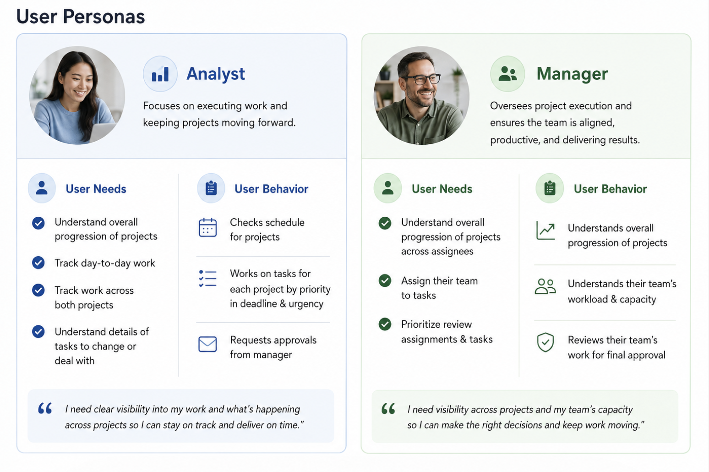
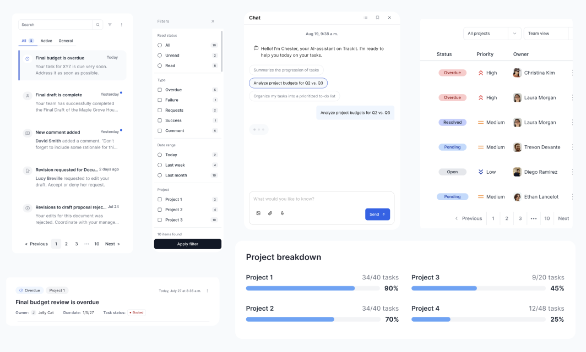
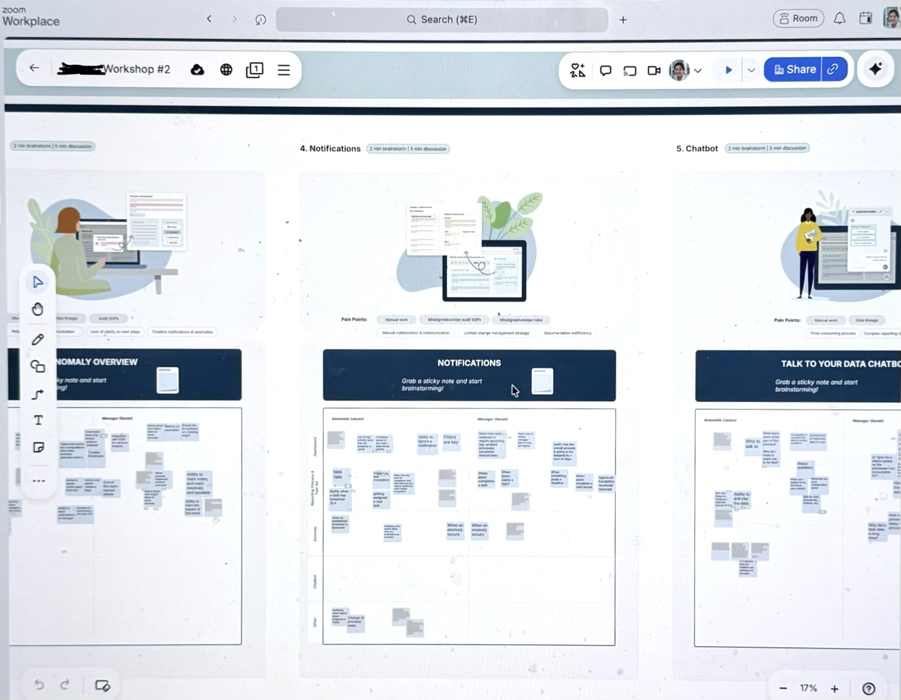

Role
UX Designer
Timeline
Jan 2026 - Jul 2026
(6 months)
Tools
Figma, Google Suite, Zoom
Skills
UI Design, Interaction Design, UMUX Lite
Overview
I owned the end-to-end design of a notification system on a task management platform that’s built from 0->1. I improved workflow efficiency for analysts by 33%. Due to the nature of my NDA, I cannot share real working products or names of the project. Therefore, the information in here has been obfuscated and re-created to be more general. Please reach out if you are interested in hearing more.
Problem
Users received notifications across multiple touchpoints, making it difficult to keep track of updates and determine which required immediate attention. Important alerts were easily overlooked, while less critical messages created unnecessary noise. The experience lacked clear prioritization and efficient ways to review or act on notifications.
Solution & Impact
For the system, I created notifications, from low-fis to high-fis. It was part of the initiative to make analyst workflows 33% faster and more efficient than before. Here's what I did:
- Create a single source of truth for notifications
- Helped users quickly get to high-priority updates
- Reduce cognitive load through clear visual hierarchy
- Design a scalable system to accommodate new notifications over the long-term roadmap
Phase 1: Discovery
Our users are analysts working on multiple projects with competing deadlines. They need to juggle with multiple projects, use legacy tools, & have different systems to track for different projects.
Our users have a fragmented task-tracking experience
In order to keep track of various schedules on different projects, users use different systems. Some projects can be kept on Jira, but most others are on different platforms or spreadsheets managed by other people. This causes confusion and can delay deadlines, especially when projects require high collaboration.

Understanding the space through cross-functional collaboration
I worked in close collaboration with 1 UX researcher, 2 designers, 3 product analysts, & 3 devs to understand the problem space.
- I did my own research into the existing design systems for inspiration.
- I set up knowledge transfer meetings with the UX researcher & designers to understand the vision & collect user research & statistics.
- I planned a hothouse / workshop to gather people on it
- I collaborated closely with the product analysts to develop the product requirements documentation
- I worked with devs to understand technical constraints & align on priorities for development
Phase 2: Design & Test
The notifications system has to solve for these areas:
- Users need to be alerted to urgent messages as soon as possible.
- Users planned to spend most of their time in this platform even at the MVP stage.
- For our specific users, there are specific key details that users expect every notification to have (e.g., owner, trigger, & status)
In short, notifications need to prioritize for urgency, be informative, & templatize specific details. It also has to smoothly integrate into the rest of the task management platform.

Delivering designs to test every month
During this time, I was delivering a final design by the end of the month to test with users and stakeholders. I worked on the designs from low-fi to high-fi in incremental progression. I worked primarily end-to-end on notifications, but supported wherever needed, including:
- Dashboard interface (how your work gets displayed on the main screen)
- Anomaly detection integrations
- Talk to your chatbot (AI chatbot assistance)

Integrating system-levels thinking
Since my design lived within the context of a task management platform, which was still being designed, developed, and tested, I also worked & filled in areas that needed additional help. This included:
- Facilitating requirements gathering for the whole task management platform by creating a feedback tracker
- Developing a proof-of-concept for an AI chatbot to help analysts work more efficiently on their workflow.
- Updating existing design system components to scale the project & improve coordination between designers
- Creating UMUX Lite surveys in-between to ensure that the prototype is going in the right direction with metrics
- Participating in user-feedback sessions, guiding users through the mock-ups, & collaborating with the UX researcher to answer the right questions for the design

Phase 3: Delivery & Impact
I delivered high-fidelity, pixel-perfect mock-ups and userflows that had major interactions for the MVP launch of the product, affecting hundreds of analysts on the platform. The high-fidelity prototype is in development & will be shipped on a platform to ~300 internal analysts & managers.
Hitting the OKRs
The ultimate goal of the project is to increase workflow efficiency for analysts by 33%. The system is launched in Oct 2026. Through user testing, we confirmed that the MVP does take less time than the current process.
Final prototype with advanced prototyping techniques
Here is a re-creation of the prototype that I built alongside some simple interactions to give you a better feel about the complexity of the system and features that I was developing.